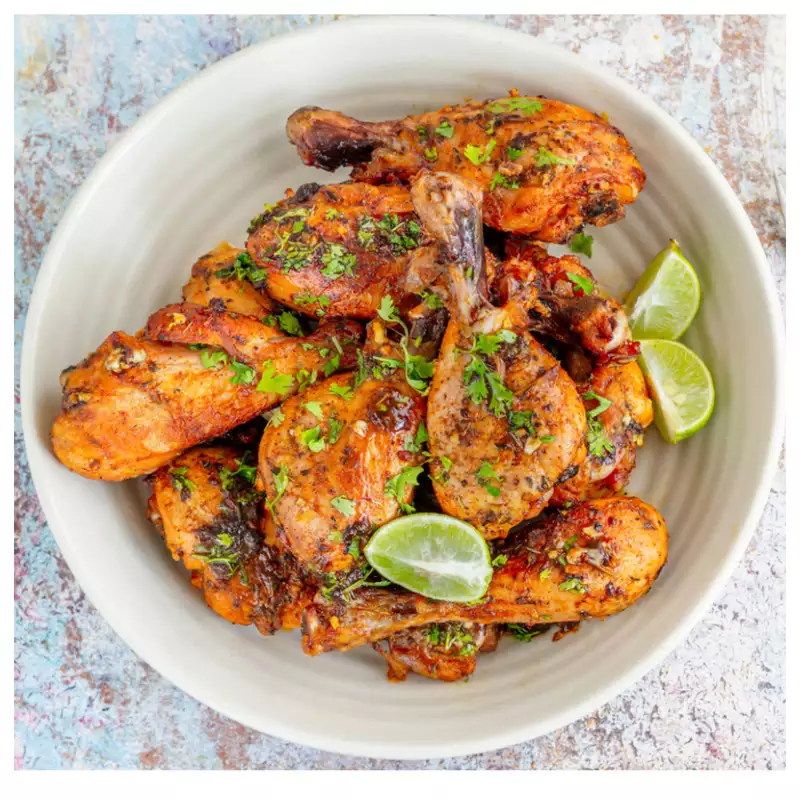

Beer and Lime Chicken Recipe

Looking for a quick and delicious appetizer? Then try this boozy Beer and Lime chicken an make your evenings interesting!
These are flavorful, addictive and will be loved by kids and grown ups alike. Cheese balls can be made in many different ways. The recipe shared here is super quick to make and the cheese balls can be deep fried, pan fried or even baked.
Ingredients
- 400 gm chicken
- 1 1/2 cup beer
- 3 tablespoon lime juice
- 7 cloves minced garlic
- 2 teaspoon honey
- salt as required
- 1 teaspoon black pepper
- 3 tablespoon cilantro
- 1 tablespoon spice paprika
Steps
- Wash and clean the chicken, cut them into desired pieces and pat dry. Next, take a bowl and add beer, lime juice, honey, garlic, salt, paprika, pepper and cilantro. Mix all the ingredients and let the honey dissolve completely.
- In the next step add the chicken pieces to the bowl and and marinate for about half an hour.
- Preheat the grill, and place the chicken pieces after removing the excess marinate. You can keep the marinade for basting the chicken and grill by flipping sides. Place the chicken pieces on the grill and let them cook for 5-7 minutes each side or until the chicken is tender and juices run clear.
- Serve hot with lemon, green chili sauce/green chutney.